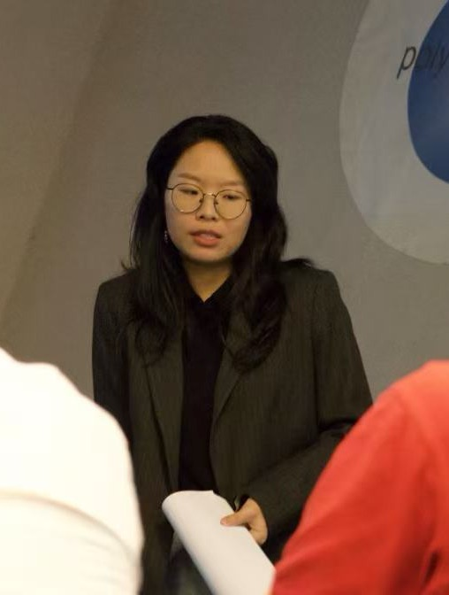

Shuolin Li (李硕琳)
Post Doc · LIS Lab · Aix-Marseille University
I'm a postdoctoral researcher at the LIS Lab, Aix-Marseille University, specializing in exact SAT and MaxSAT solving. I am also interested in exploring broader combinatorial and constraint-based optimization challenges. I received my Ph.D. from Aix-Marseille University, advised by Prof. Chu-Min Li and Prof. Djamal Habet.
shuolin.li (at) univ-amu.fr
Openings
If you are interested in SAT and MaxSAT solving, solver development, or the application of combinatorial optimization to real-world problems, I would be happy to discuss potential research opportunities. Please feel free to contact me.
News
- [06/2026] I will be joining the School of Computer Science and Artificial Intelligence at Shanghai University of Finance and Economics (SUFE) as an assistant professor in September 2026.
- [04/2026] One paper accepted at CP 2026.
- [04/2026] One paper accepted at IJCAI 2026.
- [08/2025] Awarded the Silver and Bronze Medals at the SAT Competition 2025.
- [12/2024] One paper accepted at AAAI 2025.
- [08/2024] Awarded the Gold and Silver Medals at the MaxSAT Evaluation 2024.